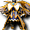
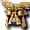
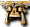
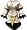

骷髏守衛
骷髏守衛
我們伺服器實際的怪物設定（不是日版 wiki 的資料）。
能力值
| 等級 | 74 |
| HP | 28289～32532 |
| AC | -25 |
| MC | -10 |
| 經驗值 | 0 |
| 金錢 | 41360～43428 |
出現地圖
| 地圖 | 數量 | 出現位置 |
| 格亨納2樓監獄 | 8～15 | 範圍 (16,20)-(135,140) |
掉落道具
| 道具 | 基本機率 |
 格亨納之寶珠(中) 格亨納之寶珠(中) | 100% |
| 女幻術師之袍 | 0.05% |
| 露米娜之精煉衣 | 0.4% |
 露米娜之拉皮內斯 | 0.4% |
 露米娜之法札德 | 0.4% |
 露米娜之卡夫坦 | 0.4% |
| 露米娜之腰帶寶珠 | 0.9% |
| 露米娜之戒指寶珠 | 1.5% |
| 露米娜之鎧甲寶珠 | 0.4% |
 骷髏靈魂石 骷髏靈魂石 | 3% |
 露米娜之板甲 露米娜之板甲 | 0.4% |
 露米娜之女板甲 露米娜之女板甲 | 0.4% |
 露米娜之緊身衣 露米娜之緊身衣 | 0.4% |
 露米娜之女緊身衣 露米娜之女緊身衣 | 0.4% |
 露米娜之法衣 露米娜之法衣 | 0.4% |
 露米娜之女法衣 露米娜之女法衣 | 0.4% |
 露米娜之聖袍 露米娜之聖袍 | 0.4% |
 露米娜之女聖袍 露米娜之女聖袍 | 0.4% |
 露米娜之武服 露米娜之武服 | 0.4% |
 露米娜之女武服 露米娜之女武服 | 0.4% |
 露米娜之外袍 露米娜之外袍 | 0.4% |
 露米娜之女外袍 | 0.4% |
 露米娜之守護甲 露米娜之守護甲 | 0.4% |
 露米娜之女守護甲 露米娜之女守護甲 | 0.4% |
| 格亨納結晶 | 1% |
基本機率再乘上伺服器的掉寶倍率；「隨機一件」是從一組道具裡抽一件。